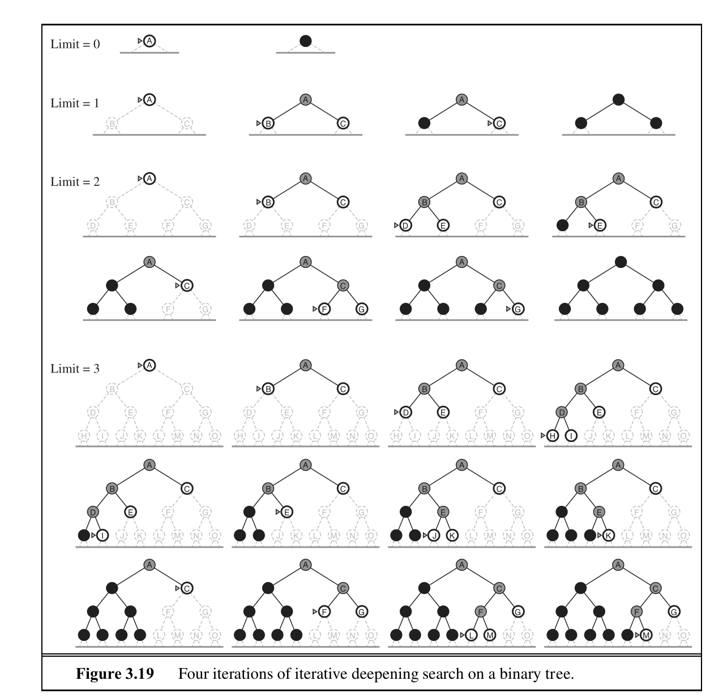

Artificial Intelligence
Table of Contents
- 1. What is Artificial Intelligence?
- 2. Intelligent Agents
- 2.1. Rational Agents
- 2.2. Exploration vs Exploitation
- 2.3. Specifying Task Environment (PEAS)
- 2.4. Properties of Task Environments
- 2.5. Table-Driven Agent
- 2.6. Reflex agents
- 2.7. Model-based Reflex Agents
- 2.8. Goal-based agents
- 2.9. Utility-based agents
- 2.10. Learning agents
- 2.11. State representations
- 3. Problem-Solving
- 4. Classical Search
- 5. Heuristic Functions
- 6. Beyond Classical Search
- 7. Adversarial Search
- 8. Classical Planning
- 9. Decision Theory
- 10. Making Complex Decisions
- 11. RANDOM
1 What is Artificial Intelligence?
Designing agents that act rationally (e.g. through maximising a reward function).
Humans often act in ways that do not maximise their own benefit (irrational).
1.1 Acting Humanly: Turing Test
A computer would require:
- natural language processing
- knowledge representation
- automated reasoning
- machine learning
1.2 Thinking Humanly
Cognitive science brings together computer models and experimental techniques in psychology to construct testable and provable theories of the human mind.
1.3 Thinking rationally
Taking informal knowledge and expressing it in logical terms.
1.4 Acting Rationally
A rational agent is one that acts so as to achieve the best outcome or,when there is uncertainty, the best expected outcome.
An agent is a function from percept histories to actions, i.e. \(f: P^* \rightarrow A\). We seek the best-performing agent for a certain task; must consider computation limits.
2 Intelligent Agents
- Agents perceive the environment through sensors
- Agents act upon the environment through actuators
2.1 Rational Agents
- For each possible percept sequence, select an action that is expected to maximise its performance measure. The performance measure is a function of a given sequence of environment states.
- Given the evidence provided by the percept sequence and whatever built-in knowledge the agent has.
- Agents can perform actions that help them gather useful information (exploration)
- An agent is autonomous if its behaviour is determined by its own experience (with ability to learn and adapt)
2.2 Exploration vs Exploitation
Doing actions that modify future percepts (information gathering) is an important part of rationality. In most scenarios, agents don't know the entire environment a priori.
2.3 Specifying Task Environment (PEAS)
- Performance measure
- Environment
- Actuators
- Sensors
2.4 Properties of Task Environments
- Fully observable
- whether an agent's sensors gives it access to the complete state of the environment at any given point in time
- Deterministic
- if the next state is completely determined by the current environment. Otherwise it is stochastic.
- Episodic
- whether an agents experience is divided into atomic episodes. In each episode, an agent receives a percept and performs a single action. In sequential environments short-term actions can have long-term consequences. For this reason, episodic environments are generally simpler.
- Static
- whether the environment can change while the agent is deliberating.
- Discrete
- whether the state of the environment, how time is handled, and the percepts and actions of the agent discretely quantized.
- Single agent
- in some environments, for example chess, there are
multiple agents acting in the same environment.
- cooperative
- if the two agents need to work together.
- competitive
- if the two agents are working against each other.
- Known
- whether the agent knows the outcome of its actions.
2.5 Table-Driven Agent
Simple to implement, and works. However, the number of table entries is exponential in time: \(\text{#percepts}^\text{time}\). Hence it is doomed to failure. The key challenge to AI is to produce rational behaviour from a small program rather than a vast table.
2.6 Reflex agents
A simple reflex agent is one that selects actions on the basis of the current percept, ignoring the rest of the percept history. A condition-action rule is triggered upon processing the current percept. E.g. if the car in front is braking, then brake too.
Basing actions on only the current percept can be highly limiting, and can also lead to infinite loops. Randomized actions of the right kind can help escape these infinite loops.
2.7 Model-based Reflex Agents
The agent maintains some internal state that depends on percept history and reflects at least some of the unobserved aspects of the current state. Information about how the world evolves independently from the agent is encoded into the agent. This knowledge is called a model of the world, and this agent is hence a model-based agent.
2.8 Goal-based agents
Knowing about the current state of the environment may not be enough to decide on what to do. Agents may need goal information that describes situations that are desirable. Sometimes goal-based action selection is straightforward, but in others searching and planning are required to achieve the goal. Goal-based agents are flexible because the knowledge that supports its decisions is represented explicitly and can be modified, although it is less efficient.
2.9 Utility-based agents
Goals provide a binary distinction between good and bad states. A more general performance measure should allow a comparison between world states according to exactly how good it is to the agent. An agent's utility function is an internalisation of the performance measure. An agent chooses actions to maximise its expected utility. A utility-based agents has to model and keep track of its environment.
2.10 Learning agents
A learning agent can be divided into four conceptual components.
- learning element
- responsible for making improvements
- performance element
- responsible for selecting extrenal actions
- problem generator
- suggests actions that will lead to new and informative experiences
the learning element takes in feedback from the critic on how the agent is doing and determines show the performance element should be modified to do better in the future.
2.11 State representations
2.11.1 Atomic Representation
In an atomic representation each state of the world is indivisible, and has no internal structure. Search, game-playing, hidden Markov models and Markov decision processes all work with atomic representations.
2.11.2 Factored Representation
A factored representation splits up each state into a fixed set of variables or attributes, each of which can have a value.
Constraint satisfaction algorithms, propositional logic, planning, Bayesian networks and machine learning algorithms work with factored representations.
2.11.3 Structured Representations
Structured representations underlie relational databases and first-order logic, first-order probability models, knowledge-based learning and much of natural language understanding.
2.11.4 Implications
A more expressive representation can capture, at least as concisely, a everything a more expressive one can capture, plus more. On the other hand, reasoning and learning become more complex as the expressive power of the representation increases.
3 Problem-Solving
Problem-solving agents use atomic representations, as compared to goal-based agents, which use more advanced factored or structured representations.
The process of looking for a sequence of actions that reaches the goal is called search. A search algorithm takes a problem as input and returns a solution in the form of an action sequence.
4 Classical Search
This addresses observable, deterministic, and known environments where the solution is a sequence of actions.
4.1 How Search Algorithms Work
Search algorithms consider various possible action sequences. The possible action sequences start at the initial state form a search tree.
Search algorithms require a data structure to keep track of the search tree that is being constructed.
- state
- state in the state space to which the node corresponds
- parent
- the node in the search tree that generated this node
- action
- the action that was applied to the parent to generate this node
- path-cost
- the cost, traditionally denoted by \(g(n)\), of the path from the initial state to the node, as indicated by the parent pointers
4.2 Measuring Performance
- completeness
- is the algorithm guaranteed to find a solution if it exists?
- optimality
- does the strategy find the optimal solution?
- time complexity
- how long does it take to find a solution?
- space complexity
- how much memory is required to do the search?
4.3 Uninformed Search Strategies
4.3.1 Breadth-first Search
The root node is expanded first, then all the successors of the root node are expanded next, then their successors, and so on.
| performance | rating |
|---|---|
| completeness | YES |
| optimal | NO |
| time complexity | \(O(b^d)\) |
| space complexity | \(O(b^d)\) |
The shallowest node may not be the most optimal node.
The space used in the explored set is \(O(b^{d-1})\) and the space used in the frontier is \(O(b^d)\).
In general, exponential-complexity search problems cannot be solved by uninformed methods for any but the smallest instances.
4.3.2 Uniform-cost Search
Uniform-cost search expands the node \(n\) with the lowest path cost \(g(n)\). The goal test is applied to a node when it is selected for expansion rather than when it is first generated.
This is equivalent to BFS if all step costs are qual.
| performance | rating |
|---|---|
| completeness | MAYBE |
| optimal | YES |
| time | \(O(b^{1+\lfloor{\frac{C^*}{\epsilon}}\rfloor})\), where \(C^*\) is the optimal cost. |
| space | \(O(b^{1+\lfloor{\frac{C^*}{\epsilon}}\rfloor})\) |
Completeness is guaranteed only if the cost of every step exceeds some small positive constant \(\epsilon\). an infinite loop may occur if there is a path with an infinite sequence of zero-cost actions.
4.3.3 Depth-first Search
Always expands the deepest node in the current frontier of the search tree.
| performance | rating |
|---|---|
| completeness | YES |
| optimal | NO |
| time complexity | \(O(b^m)\) |
| space complexity | \(O(b^m)\), \(O(m)\) if backtrack |
The time complexity of DFS may be worse than BFS: \(O(b^m)\) might be larger than \(O(b^d)\).
DFS only requires storage of \(O(bm)\) nodes, where \(m\) is the maximum depth of any node. backtracking search only generates one successor at a time, modifying the current state description rather than copying it. Memory requirements reduce to one state description and \(O(m)\) actions.
4.3.4 Depth-limited Search
In depth-limited search, nodes at depth of pre-determined limit \(l\) are treated as if they had no successors. This limit solves the infinite-path problem.
| performance | rating |
|---|---|
| completeness | YES |
| optimal | NO |
| time complexity | \(O(b^l)\) |
| space complexity | \(O(b^l)\), \(O(l)\) if backtrack |
4.3.5 Iterative Deepening Depth-first Search
Key idea is to gradually increase the depth limit: first 0, then 1, then 2… until a goal is found.

\(N(IDS) = (d)b + (d-1)b^2 + \dots + (1)b^d\), which gives a time complexity of \(O(b^d)\)
| performance | rating |
|---|---|
| completeness | YES |
| optimal | NO (unless step cost is 1) |
| time complexity | \(O(b^d)\) |
| space complexity | \(O(b^d)\), \(O(m)\) if backtrack |
- BFS and IDS are complete if \(b\) is finite.
- UCS is complete if \(b\) is finite and step cost is \(\ge \epsilon\).
- BFS and IDS are optimal if all step costs are identical.
4.3.6 Bidirectional Search
Conduct two simultaneous searches – one forward from the initial state, and the other backward from the goal. This is implemented by replacing the goal test with a check to see whether the frontiers of two searches intersect. This reduces the time ad space complexity to \(O(b^{d/2})\).
4.4 Informed Search Strategies
4.4.1 Greedy best-first search
Greedy best-first search tries to expand the node that is closest to the goal, on the grounds that this is likely to lead to a solution quickly. It evaluates nodes by using just the heuristic function: \(f(n) = h(n)\).
Greedy best-first tree search is incomplete even in a finite state space. The graph search version is complete in finite spaces, but not in infinite ones. The worst case time and space complexity is \(O(b^m)\). However, with a good heuristic function, the complexity can be reduced substantially.
4.4.2 A* search
It evaluates nodes by combining \(g(n)\) the cost to reach the node, and \(h(n)\) the cost to get to the goal: \(f(n) = g(n) + h(n)\). Since \(g(n)\) gives the path cost from the start node to node \(n\), and \(h(n)\) is the estimated cost of the cheapest path from \(n\) to the goal,$f(n) = $ estimated cost of the cheapest solution through \(n\).
\(h(n)\) is an admissible heuristic iff it never overestimates the cost to reach the goal. For A*, this means that \(f(n)\) would never overestimate the cost of a solution along the current path.
Admissible heuristics are by nature optimistic because they think the cost of solving the problem is less than it actually is.
A second, slightly stronger condition is called consistency, and is required only for applications of A* to graph search. A heuristic \(h(n)\) is consistent iff for every node \(n\) and every successor \(n'\) of \(n\) generated by any action \(a\), the estimated cost of reaching the goal from \(n\) is no greater than the step cost of getting to \(n'\) plus the estimated cost of reaching the goal from \(n'\): \(h(n) \le c(n,a,n') + h(n')\). This is a form of the general triangle inequality.
A* search is complete, optimal and optimally efficient with a consistent heuristic. The latter means that no other optimal algorithm is guaranteed to expand fewer nodes than A*.
However, for most problems, the number of states within the goal contour search space is still exponential in the length of the solution.
The absolute error of a heuristic is defined as \(\Delta = h^*-h\), and the relative error is defined as \(\epsilon = \frac{h^*-h}{h*}\). The complexity results depend strongly on the assumptions made about the state space. For constant step costs, it is \(O(b^{\epsilon d})\), and the effective branching factor is \(b^\epsilon\).
A* keeps all generated nodes in memory, and hence it usually runs out of space long before it runs of time. Hence, it is not practical for large-scale problems.
Other memory-bounded heuristic searches include:
- iterative-deepening A* (IDA*)
- Recursive best-first search (RBFS)
- Memory-bounded A* (MA*)
- simplified MA* (SMA*)
4.5 Learning to Search Better
Each state in a metalevel state space captures the internal computational state of a program that is searching in an object-level state space. A metalevel learning algorithm can learn from experiences to avoid exploring unpromising subtrees. The goal of the learning is to minimise the total cost of problem solving, trading off computational expense and path cost.
5 Heuristic Functions
If for any node n \(h_2(n) \ge h_1(n)\), we say that \(h_2\) dominates \(h_1\). Domination translates directly into efficiency: A* using \(h_2\) will never expand more nodes than \(h_1\). Hence it is generally better to use a heuristic function with higher value, while making sure it is consistent, and computing the heuristic function is computationally feasible.
5.1 Generating Admissible Heuristics
5.1.1 From Relaxed Problems
Because the relaxed problem adds edges to the state space, any optimal solution in the original problem is, by definition, also a solution in the relaxed problem. Hence, the cost of an optimal solution to a relaxed problem is an admissible heuristic for the original problem. Because the derived heuristic is an exact cost for the relaxed problem, it must obey the triangle inequality and is therefore consistent.
5.1.2 From Subproblems: Pattern Databases
Pattern Databases store exact solution costs for every possible subproblem instance. In the case of the 8-puzzle, every possible configuration of the four tiles and the blank. Each pattern database yields an admissible heuristic, and these heuristics can be combined by taking the maximum value. Solutions to subproblems can overlap: disjoint pattern databases account for this. These work by dividing the problem in a way that each move affects only one subproblem.
5.1.3 From Experience
Inductive learning methods work best when supplied with features of a state that are relevant to predicting the state's value. A common approach to combining features would be through a linear combination: \(h(n) = c_1x_1(n) + c_2x_2(n)\).
These heuristics satisfy the requirement that \(h(n) = 0\) for goal states, but are not necessarily admissible or consistent.
6 Beyond Classical Search
Here, we cover algorithms that perform purely local search in the state space, evaluating and modifying one or more current states rather than systematically exploring paths from an initial state. These include methods inspired by statistical physics (simulated annealing) and evolutionary biology (genetic algorithms).
If an agent cannot predict exactly what percept it will receive, then it will need to consider what to do under each contingency that its percepts may reveal.
If the path to the goal doesn't matter, we giht consider a different class of algorithms, ones that do not worry about the paths at all. Local search algorithms operate using a single current node and generally move only to neighbours of that node. Its advantages include:
- They generally use a constant amount of memory
- They can often find reasonable solutions in large or infinite state spaces where systematic algorithms are not suitable.
6.1 Hill-climbing Search
The hill-climbing search is a loop that continually moves in the direction of increasing value.
Consider the 8-queens problem.
Local search algorithms typically use a complete-state formation. The successors of a state are all possible states generated by moving a single queen to another square in the same column.
We could use a heuristic cost function \(h\) equal to the number of queens that are attacking each other, either directly or indirectly.
The global minimum of this function is zero, which only occurs for perfect solutions. Hill-climbing algorithms typically choose randomly among the set of best successors having the lowest \(h\).
Hill-climbing algorithms can get stuck for the following reasons:
- local maxima
- sequence of local maxima
- flat local maximum, or shoulder, from which progress is possible.
6.1.1 Variants
- stochastic hill-climbing
- chooses at random from among the uphill moves; the probability of selection can vary with the steepness of the uphill move. Usually converges more slowly, but finds better solutions.
- first-choice hill-climbing
- stochastic hill-climbing with randomly generated successors until one is generated that is better than the current state. Good when state has many successors.
- random-restart hill-climbing
- conducts hill-climbing searches from randomly generated initial states, until a goal is found. Trivially complete with probability approaching 1.
6.2 Simulated Annealing
A hill-climbing algorithm that never makes 'downhill' moves towards states with lower-value is guaranteed to be incomplete, because it can be stuck on a local maximum.
function SIMULATED-ANNEALING(problem, schedule)
inputs: problem, a problem
schedule, a mapping from time to 'temperature'
current ← MAKE-NODE(problem, INITIAL-STATE)
for t = 1 to ∞ do
T ← schedule(t)
if T = 0 then return current
next ← a randomly selected successor of current
𝞓E ← next.VALUE - current.VALUE
if 𝞓E > 0 then current ← next
else current ← next only with probability e^(𝞓E/T)
6.3 Local Beam Search
Local beam search keeps track of \(n\) states rather than just one. It begins with \(n\) randomly generated states, at each step all the successors of all states are generated. If any one is a goal, the algorithm halts.
Local-beam search passes useful information between the parallel search threads (compared to running random-restart \(n\) times), quickly abandoning unfruitful searches and moves its resources to where the most progress is being made.
/Stochastic local beam search chooses \(n\) successors at random, with the probability of choosing a given successor being an increasing function of its value/.
6.4 Genetic Algorithms
A genetic algorithm is a variant of stochastic beam search in which successor states are generated by combining two parent states rather than by modifying a single state.
GA begins with a set of \(n\) randomly generated states, called the population. Each state is also called an individual.
The production of the next generation of states is rated by the objective function, or fitness function. A fitness function returns higher values for better states.
Like stochastic beam search, genetic algorithms combine an uphill tendency with random exploration and exchange of information among parallel search threads. crossover in genetic algorithms raises the level of granularity at which the search operates.
function GENETIC-ALGORITHM(population, FITNESS-FN) returns an individual
inputs: population, a set of individuals
FITNESS-FN, a function that measures the fitness of an
individual
repeat
new_population ← empty set
for i = 1 to SIZE(population) do
x ← RANDOM-SELECTION(population, FITNESS-FN)
y ← RANDOM-SELECTION(population, FITNESS-FN)
child ← REPRODUCE(x,y)
if (small random probability) then child ← MUTATE(child)
add child to new_population
population ← new_population
until some individual is fit enough, or enough has elapsed
return the best individual in population, according to FITNESS-FN
function REPRODUCE(x,y) returns an individual
inputs: x,y, parent individuals
n ← LENGTH(x); c ← random(1,n)
return APPEND(SUBSTRING(x,1,c), SUBSTRING(y, c+1, n))
6.5 Local Search in Continuous Spaces
One way to avoid continuous problems is simply to discretize the neighbourhood of each state. Many methods attempt to use the gradient of the landscape to find a maximum: \(x \leftarrow x + \delta \nabla (x)\), where $δ is a small constant called the step size. For many problems, the Newton-Raphson method is effective. It solves the roots for equations \(g(x) = 0\), by computing a new estimate: \(x \leftarrow x - g'(x)/g(x)\). To find a maximum or minimum of \(f\), we need to find \(x\) such that the gradient is zero. In this case \(g(\mathbf{x})\) in Newton's formula becomes \(\nabla f(\mathbf{x})\) and the update equation can be written in matrix-vector form as:
\begin{align*} \mathbf{x} \leftarrow \mathbf{x} - H_f^{-1}(\mathbf{x})\nabla f(\mathbf{x}) \end{align*}where \(H_f\) is the Hessian matrix of second derivatives. For high-dimensional problems, computing the \(n^2\) entries of the Hessian and inverting it may be expensive, and approximate versions have been developed.
Local search methods suffer from local maxima, ridges and plateaux in continuous spaces just as much as in discrete spaces.
6.6 Searching with Non-deterministic Actions
When the environment is either partially observable or non-deterministic, percepts become useful. In a partially observable environment, every percept helps narrow down the set of possible states the agent might be in. In a non-deterministic environment, percepts tell the agent which of the possible outcomes of its actions has actually occurred. Future percepts cannot be determined in advance, and the agent's future actions will depend on those future percepts. The solution to a problem is not a sequence but a contingency plan
The solutions for no-deterministic problems can contain nested if-then-else statements, meaning they are trees and not sequences.
6.6.1 AND-OR search trees
A solution for an AND-OR search problem is a subtree that:
- includes every outcome branch leaf
- specifies one action at each of its OR nodes
- includes every outcome branch at each of its AND nodes
function AND-OR-GRAPH-SEARCH(problem) returns a conditional plan, or failure
OR-SEARCH(problem, INITIAL-STATE, problem, [])
function OR-SEARCH(state,problem,path) returns a conditional plan, or failure
if problem, GOAL-TEST(state) then return the empty plan
if state is on path then return failure
for each action in problem, ACTIONS(state) do
plan ← AND-SEARCH(RESULTS(state,action), problem, [state | path])
if plan ≠ failure then return [action | plan]
return failure
function AND-SEARCH(states,problem,path) returns a conditional plan, or failure
for each s_i in states do
plan_i ← OR-SEARCH(s_i,problem,path)
if plan_i = failure then return failure
return [if s_1 then plan_1 else if s_2 then plan_2 ...]
(stop at AIMA 4.4)
7 Adversarial Search
Competitive environments, in which the agent's goals are in conflict, give rise to adversarial search problems.
Game theory views any multi-agent environment as a game, provied that the impact of each agent on the others is significant.
Games often have large branching factors, and require making some decision even before computing the optimal decision.
Pruning allows us to ignore portions of the search tree that make no difference to the final choice, and heuristic evaluation functions allow us to approximate the true utility of a state without doing a complete search.
A game can be formally defined as a search problem with the following elements:
- \(S_0\)
- the initial state, which specifies how the game is set up at the start
- \(Player(s)\)
- Defines which player has the move in a state
- \(Actions(s)\)
- Returns the set of legal moves in a state
- \(Result(s,a)\)
- The transition model, which defines the result of a move
- \(TerminalTest(s)\)
- Terminal test, which is true when the game is over, and false otherwise.
- \(Utility(s,p)\)
- A utility function defines the numeric value for a game that ends in terminal state \(s\) for a player \(p\).
The initial state, \(Actions\) function and \(Result\) function define the game tree for the game.
7.1 Optimal Strategy
The optimal strategy can be determined from the minimax value of each node (\(Minimax(n)\)). The minimax value of a node is the utility of being in the corresponding state, assuming that players play optimally from there to the nd of the game. The minimax value of a terminal state is its utility.
\begin{align} Minimax(s) = \begin{cases} Utility(s), \text{ if } TerminalTest(s) \\ max_{a \in Actions(s)}MINIMAX(Result(s,a)), \text{if Player(s) = Max} \\ min_{a \in Actions(s)}MINIMAX(Result(s,a)), \text{if Player(s) = Min} \end{cases} \end{align}Minimax uses utility function on leaf nodes, backing up through the tree, setting the node value to be the minimum of the children.
7.2 Alpha-Beta Pruning
Eliminate parts of the search tree that do not affect decision.
8 Classical Planning
Problem-solving agents that deal with atomic representations of states require good domain-specific heuristics to perform well. The hybrid propositional logical agent can find plans without domain-specific heuristics because it uses domain-independent heuristics based on the logical structure of the problem. However, it relies on ground propositional inference, and suffers when there are large numbers of actions and states.
Planning Domain Definition Language (PDDL) was created in response to these deficiencies.
Each state is represented as a conjunction of fluents that are ground, functionless atoms. Database semantics is used, which involves:
- closed-world assumption
- all fluents not mentioned are false
- unique names assumption
- fluents with different names are distinct
State representations are carefully designed so that they can be manipulated by set operations or logical inference.
Actions are defined in terms of the preconditions and effects. Preconditions and effects are described in terms of a conjunction of literals.
8.1 Complexities of classical planning
PlanSAT is the question of whether there exists any plan that solves a planning problem. Bounded PlanSAT asks whether there is a solution of length k or less.
While the number of states is finite, adding function symbols make them infinite, making these problems semi-decidable at best. Certain restrictions can reduce the questions into a P class problem.
However, most agents would not be asked to derive plans for worst-case problem instances. For many problem domains, bounded PlanSAT is NP-complete, while PlanSAT is in P.
8.2 State-space search for planning
The first approach is forward (propogation) state-space search, which searches forward from the initial state. However, it is inefficient, for the following reasons:
- It tends to explore irrelevant actions
- Planning problems tend to have large state spaces, and relatively small problems will be an issue without a good heuristic
It turn out that good domain-independent heuristics can be derived for forward search, which makes it feasible.
Alternatively, we can do a backward (regression) state-space search, which looks for actions that can lead to the goal. Unlike forward search, backward search only explores relevant actions, hence has a low branching factor. However, backward search deals with sets, which are make it harder to derive good domain-independent heuristics.
8.3 Heuristics for planning
Framing the search problem as a graph where the nodes are states and the edges are actions. We can think of a number of ways to relax the problem, generating admissible heuristics:
- Add more edges to the graph, making it easier to find a path
The ignore preconditions heuristic drops all preconditions from actions, and every action becomes applicable in every state. We count the number of actions required such that the union of the action's effects satisfy the goal. This is called the set-cover problem, which is unfortunately NP-hard. We can also ignore selected preconditions of actions.
The ignore delete list heuristic, drops all negative literals in goals and preconditions. This way, an action cannot undo progress towards the goal, and each action taken would monotonically progress towards it.
- Grouping multiple nodes together, shrinking the size of the graph
We can reduce the number of states by forming a state abstraction – a many-to-one mapping from states in the ground representation of the problem to the abstract representation. For example, one can ignore some fluents.
The key idea in defining heuristics is decomposition: diving a problem into parts. Subgoal independence is the assumption that the cost of solving a conjunction of subgoals is approximated by the sum of the costs of solving a subgoal independently.
8.4 Other classical planning approaches
We can translate a problem description in PDDL to a form that can be processed by SATPlan. The steps are below:
- Propositionalize the actions: replace each action schema with a set of ground actions formed by substituting constants for each of the variables. These ground actions are not part of the translation, but will be used in subsequent steps.
- Define the initial state: assert \(F^0\) for every fluent \(F\) in the problem's initial state, and \(\neg F^0\) for every fluent not mentioned in the final state.
- Propositionalize the goal: the goal becomes a disjunction over all of its ground instances, where variables are replaced by constants.
- Add successor-state axioms: For each fluent \(F\), add an axiom of the form:
Where \(ActionCausesF\) is a disjunction of all the ground actions that have \(F\) in their add list, and \(ActionCausesNotF\) is a disjunction of all ground actions that have \(F\) in their delete list.
- Add precondition axioms: for each ground action \(A\), add the axiom \(A^t \iff PRE(A)^t\), i.e. if an action is taken at time \(t\), then the preconditions must be true.
- Add action exclusion axioms: say that exactly one ground action can occur at each step.
function SATPLAN(init, transition, goal, Tmax) returns solution or failure
""inputs: init, transition, goal constitute the problem
description
Tmax: upper limit for plan length""
for t = 0 to Tmax do
cnf <- translate-to-sat(init, transition, goal, t)
model <- SATSolver(cnf)
if model is not null then
return extract-solution(model)
return failure
9 Decision Theory
Reference: AIMA Chapter 16
Utility theory combines with probability theory to yield a decision-making agent, that can make rational decisions based on what it believes and what it wants. This is opposed to goal-based agents, that make binary decisions between good and bad states.
9.1 Combining beliefs and desires under uncertainty
Under nondeterministic, partially observable environments, the result of an action cannot be represented by a single number. \(RESULT(\alpha)\) is now expressed as a random variable, whose values are the possible outcome states with corresponding probabilities of occurrence. The probability of an outcome \(s'\), given evidence observations \(\mathbb{e}\), is written \(P(RESULT(\alpha) = s' | a, \mathbb{e})\).
The agent's preferences are captured by a utility function \(U(s)\), which expresses the desirability of a state. We can calculate the expected utility of a function as follows:
\begin{equation} EU(a | \mathbb{e}) = \sum_{s'} P(RESULT(\alpha) = s' | a, \mathbb{e}) U(s') \end{equation}The principle of maximum expected utility (MEU) says that a rational agent should choose the action that maximizes the expected utility. If an agent acts to maximise a utility function that correctly reflects all possible outcomes, then it will achieve the highest possible performance score (averaged across all environments).
9.2 Axioms of Utility Theory
To show why MEU is a rational choice, we turn to utility theory. First, we define notation:
- \(A \succ B\): the agent prefers \(A\) over \(B\).
- \(A \sim B\): the agent is indifferent between \(A\) and \(B\).
- \(A \succeq B\): the agent prefers \(A\) over \(B\), or is indifferent.
The axioms of utility theory are:
- orderability
- Exactly one of \(A \succ B\), \(B \succ A\) or \(A \sim B\) holds.
- transitivity
- \((A \succ B) \wedge (B \succ C) \Rightarrow A \succ C\)
- continuity
- \(A \succ B \succ C \Rightarrow \exist p [p, A; 1-p, C] \sim B\)
- substitutability
- \(A \sim B \Rightarrow [p, A; 1-p, C] \sim [p, B; 1-p, C]\)
- monotonicity
- \(A \succ B \Rightarrow (p > q) \iff [p, A; 1-p B] \succ [q, A; 1-q, B]\)
- Decomposability
- \([p, A; 1-p, [q, B; 1-q, C]] \sim[p, A;(1-p)q, B; (1-p)q, C]\)
von Neumann and Morgenstern showed that following these axioms, it can be shown that.
- Utility functions exist. \(U(A) > U(B) \iff A \succ B\) and \((U(A) = U(B) \iff A \sim B)\).
- The utility of a lottery, can be represented as the sum of probability of each outcome, multiplied by the utility of that outcome: \(U([p_1, S_1; \dots; p_n, S_n]) = \sum_i p_iU(S_i)\).
Utility functions are not unique: in fact, that are not changed with affine transformations, of the form \(U'(s) = aU(s) + b\). This is because the agent only needs a preference on the ranking of states, and the actual value of the utility does not matter.
9.3 Utility assessment and utility scales
To build a decision-theoretic system, we must first work out what the agent's utility function is. This process is called preference elicitation, which involves presenting choices to the agent and using the observed preferences to pin down the underlying utility function.
We have established above that utility functions are not unique, but it helps to have a normalized utility. Normalized utilities fix the utility of a "best possible prize" at \(u_\top = 1\) and the "worst possible prize" at \(u_\bot = 0\).
Given this utility scale, we can assess the utility of a prize \(S\), by asking the agent to choose between \(S\) and the standard lottery \([p, u_\top;1-p, u_\bot]\). \(p\) is adjusted until the agent is indifferent between \(S\) and the lottery. This is done for each prize \(S\).
9.4 Multi-attribute utility functions
When outcomes are characterized by two or more attributes, we need a multi-attribute utility function.
9.4.1 Dominance
We say that there is strict dominance of \(S_1\) over \(S_2\) if \(S_2\) is lower on all attributes as compared to \(S_1\). Under uncertainty, we use a more useful generalization: stochastic dominance.
If \(A_1\) stochastically dominates \(A_2\), then for any monotonically increasing utility function \(U(x)\), the expected utility of \(A_1\) is at least as high as the expected utility of \(A_2\). We can understand this via the cumulative distribution. For any action \(A_1\) and \(A_2\), that lead to probability distributions \(p_1(x)\) and \(p_2(x)\) on the random variable \(X\):
\begin{equation} \forall x \int_{-\infty}^{x} p_1(x')dx' \le \int_{-\infty}^{x} p_2(x')dx' \end{equation}9.4.2 Preference structure and multi-attribute utility
Multi-attribute utility theory is based on the supposition that preferences of typical agents have structure. This alleviates the difficulty in expressing a utility function with many attributes and possible distinct values.
One simple regularity in preference structures is called preference independence. Two attributes \(X_1\) and \(X_2\) are preferentially independent if the preference between outcomes \((x_1, x_2, x_3)\) and \((x_1', x_2', x_3)\) does not depend on the value of the value \(x_3\) of attribute \(X_3\).
If all attributes are mutually preferentially independent, then an agent's preference can be described by maximising the function:
\begin{equation} V(x_1, x_2, \dots, x_n) = \sum_i V_i(x_i) \end{equation}An example is:
\begin{equation} V(noise, cost, deaths) = - noise \times 10^4 - cost - deaths \times 10^{12} \end{equation}Under uncertainty, the mathematics gets a bit more complicated. Utility independence extends preference independence to cover lotteries: a set of attributes \(\mathbb{X}\) is utility independent of a set of attributes \(\mathbb{Y}\) if preference between lotteries on the attributes in \(\mathbb{X}\) are independent of the particular values of the attributes in \(\mathbb{Y}\).
Mutual utility independence implies that the agent's behaviour can be described using a multiplicative utility function. If we denote \(U_i\) to be \(U_i(x_i)\), then a 3 attribute utility function can be expressed as:
\begin{equation} U = k_1U_1 + k_2U_2 + k_3U_3 + k_1k_2U_1U_2 + k_1k_3U_1U_3 + k_2k_3U_2U_3 + k_1k_2k_3U_1U_2U_3 \end{equation}9.4.3 Decision Networks
Decision networks extend Bayesian networks with nodes for actions and utilities. An example of a decision network is below:

The notation is as such:
- chance nodes (oval)
- these represent random variables
- decision nodes (rectangles)
- these represent points where the decision maker has a choice of actions.
- utility nodes (diamonds)
- represent the agent's utility function
A simplified form is used in many cases. The notation remains identical, but the chance nodes describing the outcome state are omitted. Rather than representing a utility function on outcome states, the utility node represents the expected utility associated with each action. This node is associated with an action-utility function (also known as Q-function).
9.4.4 Information Value Theory
The value of a given piece of information is defined to be the difference in expected value between the best action before and after information is obtained. This is one of the most important parts of decision-making: knowing what information to obtain. Information has value to the extent that it is likely to cause a change of plan and to the extent that the new plan is significantly better than the old plan.
Mathematically, the value of perfect information (VPI) is defined as:
\begin{equation} VPI_e(E_j) = \left( \sum_k P(E_j = e_{jk} | \mathbb{e}) MEU(\alpha_{e_{jk}} | \mathbb{e}, E_j = e_{jk}) \right) - MEU(\alpha | \mathbb{e}) \end{equation}This is obtained by considering the best action (maximum expected utility) before and after obtaining the information, and averaging it across all possible values for the new information, using our current beliefs of its value.
9.4.4.1 Properties of the value of information
First, the expected value of information is non-negative.
\begin{equation} \forall \mathbb{e}, E_j VPI_{\mathbb{e}} (E_j) \ge 0 \end{equation}The theorem is about the expected value, and not the real value. This means that information can sometimes lead to a plan that is harmful.
It is important to note that VPI is dependent on the current state of information. VPI is not additive in general:
\begin{equation} VPI_{\mathbb{e}}(E_j, E_k) \ne VPI_{\mathbb{e}}(E_j) + VPI_{\mathbb{e}}(E_k) \end{equation}VPI is order independent. That is:
\begin{equation} VPI_{\mathbb{e}}(E_j, E_k) = VPI_{\mathbb{e}}(E_j) + VPI_{\mathbb{e}, e_j}(E_k) = VPI_{\mathbb{e}}(E_k) + VPI_{\mathbb{e}, e_k}(E_j) \end{equation}9.4.4.2 Information Gathering Agents
we can implement a myopic information-gathering agent, by using the VPI formula shortsightedly.
function INFORMATION-GATHERING-AGENT(percept) returns an action persistent: D, a decision network integrate percept into D j <- the value that maximises VPI(E_j) / Cost(E_j) if VPI(E_j) > Cost(E_j) return REQUEST(E_j) else return the best action from D
If we know the associated cost of observing evidence, it simply retrieves the evidence if the cost of observing it is less than the value it provides.
10 Making Complex Decisions
Earlier, we were concerned with environments with one-shot, episodic decision problems. Sequential decision problems incorporate utilities, uncertainty and sensing. These include searching and planning problems as special cases.
10.1 Markov Decision Process (MDP)
A sequential decision problem for a fully observable, stochastic environment with a Markovian transition model and additive rewards is called a Markov decision process. It consists of a set of states, with initial state \(s_0\), a set \(ACTIONS(s)\) of actions in each state, a transition model \(P(s'|s, a)\), and a reward function \(R(s)\).
A policy, denoted \(\pi\), specifies what the agent should do in any state \(s\). This action is denoted by \(\pi(s)\). The optimal policy $π*$*yields the highest expected utility.
The careful balancing of risk and reward is a characteristic of MDPs that does not arise in deterministic search problems.
10.2 Utilities over time
A finite horizon for decision making means that there is a fixed time \(N\) after which nothing matters. In these scenarios, the optimal action in a given state could change over time, i.e. the optimal policy is non-stationary.
It turns out that under stationarity, there are only 2 coherent ways to assign utilities to sequences:
- additive rewards
- \(U_h([s_0, s_1, \dots, s_n]) = R(s_0) + R(s_1) + \dots + R(s_n)\)
- discounted rewards
- \(U_h([s_0, s_1, \dots, s_n]) = R(s_0) + \gamma \cdot R(s_1) + \dots + \gamma^2 \cdot R(s_n)\)
This discount factor \(\gamma\) is a number between 0 and 1. Assuming stationarity has several problems. First, if the environment does not contain a terminal state, then utilities of undiscounted rewards go to infinite, and comparing two infinitely state sequences would be impossible. With discounted rewards, the utility of an infinite sequence can be made finite.
However, if the environment contains a terminal state, and the agent is guaranteed to reach a terminal state eventually, then this policy is called a proper policy, and the above issue goes away. Infinite sequences can be compared in terms of the average reward obtained per time step.
10.3 Optimal policies and the utilities of states
First, we can derive the expected utility of executing a policy \(\pi\) in \(s\):
\begin{equation} U^\pi (s) = E\left[ \sum_{t=0}^\inf \gamma^t R(S_t) \right] \end{equation}where the expectation is with respect to the probability distribution over state sequences. determined by \(s\) and \(\pi\). Then $π*(s) = argmaxπ U^π (s)*.
A consequence of using discounted utilities with infinite horizons is that the optimal policy is independent of the starting state. This allows us to compute the true utility of the state as \(U^{\pi^*} (s)\). The utility function allows the agent to select actions by using the principle of maximum expected utility from the earlier chapter: \(\pi^*(s) = argmax_{a \in A(s) } \sum_{s^'} P(s' |s, a)U(s')\).
10.4 Value Iteration
The bellman equation illustrates that the utility of a state is the immediate reward for that state plus the expected discounted utility of the next state:
\begin{equation} U(s) = R(s) + \gamma max_{a \in A(s)} \sum_{s'} P(s' | s, a)U(s') \end{equation}If there are \(n\) possible states, there are \(n\) Bellman equations to solve. However, these equations are non-linear, and cannot be solved using linear algebra techniques.
Value iteration is an algorithm that is guaranteed to converge to an equilibrium. The basic idea is to start with arbitrary initial values for the utilities. We compute the right hand side of the equation, and update the utility on the left hand side of the equation.
function VALUE-ITERATION(mdp, e) returns a utility function
inputs: mdp, an MDP with states S, actions A(s), transition model P(s' | s, a), discount \gamma
e, the maximium error allowed in the utility of any state
locals: U, U', vectors of utilities for states in S, initially zero
\delta, the maximum change in utility for any state
repeat
U <- U'; \delta <- 0
for each state s in S do
U'[s] <- R(s) + \gamma max_{a \in A(s)} \sum_{s'} P(s' | s, a) U[s']
if |U'[s] - U[s] | > \delta then \delta <- |U'[s] - U[s]|
until \delta < e(1-\gamma) / \gamma
return U
10.5 Policy Iteration
We have already observed that it is possible to get an optimal policy, without having accurate utility function estimates.
The policy iteration algorithm exploits this. The algorithm alternates between 2 steps, beginning at some policy \(\pi_0\):
- Policy evaluation: given a policy \(\pi_i\), calculate \(U_i = U^{\pi_i}\), the utility of each state if \(\pi_i\) were to be executed
- Policy improvement: calculate a new MEU policy \(\pi_{i+1}\), using one-step look ahead based on \(U_i\):
Policy evaluation is simple, because the policy \(\pi_i\) specifies the action \(\pi_i(s)\) in state \(s\). This means we have a simplified version of the Bellman equation relating the utility of \(s\) to the utility of its neighbours:
\begin{equation} U(s) = R(s) + \gamma \sum_{s'} P(s' | s, a)U(s') \end{equation}These equations are linear and can be quickly solved (in \(O(n^3)\) time) with linear algebra techniques. We can further speed up this process by performing an approximate policy evaluation. We do this by performing some number of value iteration steps to update the utilities:
\begin{equation} U_{i+1}(s) \leftarrow R(s) + \gamma \sum_{s'}P(s'|s, \pi_i(s))U_i(s') \end{equation}The resulting algorithm is called modified policy iteration, and is often much more efficient.
function POLICY-ITERATION(mdp) returns a policy
inputs: mdp, an MDP
locals: U, vector of utilities for states in S
\pi, a policy vector indexed by state, initially random
repeat
U <- POLICY-EVALUATION(\pi, U, mdp)
unchanged? <- true
for each state s in S do
if max_{a \in A(s)} \sum_{s'} P(s'|s, a) U[s'] > \sum_{s'} P(s'|s, \pi[s])U[s'] then do
\pi[s] \leftarrow argmax_{a \in A(s)} P(s'|s, a) U[s']
unchanged <- false
until
unchanged?
return \pi
Asynchronous policy iteration involves picking a subset of states and applying either kind of updating (policy improvement or simplified value iteration) on that subset. Given certain conditions, this is guaranteed to converge, and the freedom to choose any subset of states gives us a means to design efficient heuristic algorithms.
10.6 Partially Observable MDPs (POMDPs)
The assumption of full observability, accompanied with the Markov assumption for the transition model means that the optimal policy depends only on the current state. When the environment is partially observable, the agent does not know which state it is in. The agent then cannot execute \(\pi(s)\). The utility of a state \(s\) and the optimal action in \(s\) does not only depend on \(s\), but also how much the agent knows when it is in \(s\).
In addition to the elements of the MDP – the transition model \(P(s'|s, a)\), actions \(A(s)\), and reward function \(R(s)\), it also has a sensor model \(P(e|s)\). The sensor model specifies the probability of perceiving evidence \(e\) in state \(s\). For example, a sensor might measure the number of adjacent walls. A noisy sensor might return the wrong value with some probability.
Belief states are the set of actual states the agent might be in. In POMDPs, these belief states are probability distributions over all possible states. The agent can calculate its current belief state as the conditional probability distribution over the actual states given the sequences of percepts and actions so far.
If the previous belief state is \(b(s)\), and the agent performs some action \(a\) and perceives evidence \(e\), then the new belief state is given by:
\begin{equation} b'(s') = \alpha P(e | s') \sum_s P(s' | s, a) b(s) \end{equation}where \(\alpha\) is a normalizing constant that makes the belief state sum to 1.
The optimal action in a POMDP depends only on the agent's belief state. The optimal policy can be described by a mapping \(\pi^* (b)\) from belief states to actions.
The decision cycle of a POMDP can be broken down into 3 steps:
- Given the current belief state \(b\), execute the action \(a = \pi^* (b)\).
- Receive percept \(e\).
- Update the belief state to \(b'\) and repeat.
If we knew the action and the subsequent percept, then the update to the belief state would be a deterministic one, following the update equation. The subsequent percept is not yet known, so the agent will arrive in one of several possible belief states. The probability of perceiving \(e\), given that \(a\) is was the action taken from belief state \(b\), is given by:
\begin{align} P(e | a,b) &= \sum_{s'} P(e | a, s', b) P(s' | a, b) \\ &= \sum_{s'} P(e|s')P(s'|a, b) \\ &= \sum_{s'} P(e | s')\sum_{s'}P(s'|s, a)b(s) \end{align} \begin{align} P(b' | a, b) &= \sum_eP(b' | e, a, b) P(e | a, b) \\ &= \sum_eP(b' | e, a, b)\sum_{s'} P(e|s')\sum_{s'} P(s' | s, a)b(s) \end{align}Where \(P(b' | e, a, b) = 1\) if \(b' = FORWARD(b,a,e)\) and \(0\) otherwise.
Because POMDPs have continuous state space, new algorithms for computing or approximating the optimal policies for MDPs do not apply here.
10.7 Value iteration for POMDPs
The value iteration algorithm for the MDP computed one utility value for each state. With infinitely many belief states, we need to be more creative.
Consider conditional plans, and how the expected utility of executing a fixed conditional plan varies with the initial belief state.
- Let the utility of executing a fixed conditional plan \(p\) starting in physical state \(s\) be \(\alpha_p(s)\). Then the expected utility of executing \(p\) in belief state \(b\) is \(\sum_s b(s) \alpha_p (s)\) Hence the expected utility of a fixed conditional plan varies linearly with \(b\).
- At any given belief state \(b\), the optimal policy will choose to execute the conditional plan with the highest expected utility, and the expected utility is just the utility of that conditional plan:
If the optimal policy \(\pi^*\) chooses to execute \(p\) starting at \(b\), then it is reasonable to expect that it might choose to execute \(p\) in belief states that are close to \(b\).
From these 2 observations, we see that the utility function \(U(b)\) on belief states, being the maximum of a collection of hyperplanes, will be piecewise linear and convex.
Let \(p\) be a depth-d conditional plan whose initial action is \(a\) and whose depth-d-1 subplan for percept \(e\) is \(p.e\), then
\begin{equation} \alpha_p{s} = R(s) + \gamma \left( \sum_{s'} P(s' | s,a)\sum_e P(e|s')\alpha_{p.e}(s') \right) \end{equation}This recursion gives rise to a value iteration algorithm:
function POMDP-VALUE-ITERATION returns a utility function
inputs: pomdp
e, the maximum error allowed for utility
locals: U, U' sets of plans p
U' <- set containing the empty plan [], with \alpha_[](s) = R(s)
repeat
U <- U'
U' <- set of all plans computed with above equation
U' <- REMOVE-DOMINATED-PLANS(U')
until MAX-DIFFERENCE(U, U') < e(1-\gamma) / \gamma
return U
The algorithm's complexity is dominated by the number of plans generated: given \(|A|\) possible actions and \(|E|\) possible observations, there are \(|A|^{O(|E|^{d-1})}\) distinct depth-d plans, making the algorithm hopelessly inefficient for larger problems.
10.8 TODO Online agents for POMDPs
11 RANDOM
11.1 Simon's Ant
Simon, noble prize in economics
The complexity of the behaviour is the manifestation of the complexity of the environment and not the complexity of the program.